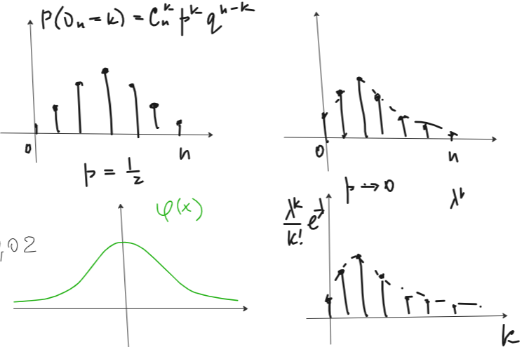

\(\nu_n\) – биномиальное распределение с параметрами \(n\) и \(p\), то есть \(P(\nu_n = k) = C_n^kp^kq^{n - k}\). Если \(p\) очень маленькое, а \(n\) очень большое, то получаем вычислительную ошибку. Или если хотим вероятность \(P(m_1 \leqslant \nu_n \leqslant m_2) = \displaystyle \sum_{k = m_1}^{m_2}P(\nu_n = k)\) и, если слагаемых большое количество, то ошибка быстро накапливается. И вообще, это медленно считать.
Решает проблему больших \(n\) и маленьких \(p\)
Теорема: (теорема Пуассона) Пусть \(p(n) \to 0, \,\,\,\, n \to \infty\), так что \(n\cdot p(n) \to \lambda, \,\,\,\, n \to \infty\). Тогда \(P\left(\nu_n = k\right) \to \frac{\lambda^k}{k!}e^{-\lambda}\).
На практике ничего, конечно, никуда не стремится. И мы берем \(\lambda = n\cdot p\) и говорим, что \(P(\nu_n = k)\approx \frac{\lambda^k}{k!}e^{-\lambda}\).
Но как в таком случае понять можно ли применять теорему Пуассона (как оценить ошибку)? Для этого есть оценка \(\left|P(\nu_n = k) - \frac{\lambda^k}{k!}e^{-\lambda}\right| \leqslant \min(p, np^2)\).
Доказательство: см. лекции (его там нет) \(\,\,\,\,\blacksquare\)
Теорема: (локальная теорема Муавра) \(P(\nu_n = k) \sim \frac1{\sqrt{npq}}\cdot \varphi(\frac{k - np}{\sqrt{npq}}), \,\,\,\, n \to \infty, \,\,\,\, \varphi(x) = \frac1{\sqrt{2\pi}}e^{-\frac{x^2}2}\).
Коэффицент в \(\varphi\) такой, чтобы \(\displaystyle\int\limits_{-\infty}^{+\infty} \varphi(x)dx = 1\)
\(\sqrt{npq} = \sqrt{D\nu_n}\) и \(np = E\nu_n\), то есть \(P(\nu_n = k) \sim \frac1{\sqrt{D\nu_n}}\cdot \varphi(\frac{k - E\nu_n}{\sqrt{D\nu_n}})\)
Применяем когды \(p \approx \frac12\) и \(k\) близко к \(np\)
Вычитаем \(np\), чтобы сдвинуть ось.

Доказательство: см. лекции (его там нет) \(\,\,\,\,\blacksquare\)
Теорема: (интегральная теорема Муавра-Лапласа) \(P\left(a \leqslant \frac{\nu_n - np}{\sqrt{npq}} \leqslant b\right) \to \Phi(b) - \Phi(a), \,\,\,\, \Phi(x) = \displaystyle\int\limits_{-\infty}^x \varphi(t)dt\)
По сути интегрируем в предыдущей теореме и пишем формулу Ньютона-Лейбница.
Чтобы посчитать \(\Phi\) нужно гуглить «таблицы нормального распределения». Иногда таблицы для \(\Phi_0(x) = \int\limits_0^x \varphi(t)dt, \,\,\,\, \Phi(x) = \frac12 + \Phi_0(x)\)
\(\Phi(x)\) набирает свою единицу на отрезке \([-3, 3]\), поэтому при \(x > 3 \,\,\,\, \Phi(x) \approx 1\) и при \(x < -3 \,\,\,\, \Phi(x) \approx 0\).
Доказательство: см.лекции (его там нет) \(\,\,\,\,\blacksquare\)
Задача: При передаче сообщения каждый знак искажается независимо от других с вероятностью \(p = \frac1{100} = 0.01\). Передано сообщение из \(n = 200\) знаков. Оценить вероятность того, что число искажений равно \(3\).
Решение:
\(\nu_n\) – количество искаженных символов.
\(\lambda = np = 200 \cdot 0.01 = 2\).
\(P(\nu_n = 3) \approx \frac{2^3}{3!}e^{-2} \approx 0.18\)
Оценим ошибку: \(np^2 = 200\cdot 0.0001 = 0.02\) и, следовательно, \(\min(0.02, 0.01) = 0.01\) (такую погрешность переживем).
Теперь посчитаем вероятность того, что число искажений не меньше \(3\): \(P(\nu_n \leqslant 3) = \displaystyle \sum_{k = 0}^{3}\frac{2^3}{3!}e^{-2}\approx\) идем в табличку \(\approx 0.8571\)
Задача: В партии \(n = 22500\) изделий. Каждое независимо от других может быть бракованно с веротяностью \(p = 0.2\). Оценить вероятность того, что число бракованных изделий заключено между \(a = 4380\) и \(b = 4560\).
Решение:
\(\nu_n\) – число бракованных изделий среди \(n\).
\(n\) – большое и \(p = 0.2 \lll 0.5\), поэтому проверим теорему Пуассона. Посчитаем оценку: \(\min(np^2, p) = \min(900, 0.2) = 0.2\). Это много, поэтому берем теорему Муавра-Лапласа.
\(np = 4500, \,\,\,\, \sqrt{npq} = 60\).
\(P\left(a \leqslant \frac{\nu_n - np}{\sqrt{npq}} \leqslant b\right) \approx \Phi(b) - \Phi(a), \,\,\,\, \Phi(x) = \displaystyle\int\limits_{-\infty}^x \frac1{\sqrt{2\pi}}e^{-\frac{t^2}2}dt\)
\(=P\left(x \leqslant \frac{\nu_n - 4500}{60} \leqslant y\right) = P\left(60x + 4500 \leqslant \nu_n \leqslant 60y + 4500\right) \implies\)
\(P\left(a \leqslant \nu_n \leqslant b\right) = P\left(-2 \leqslant \frac{\nu_n - 4500}{60} \leqslant 1\right)\approx\) \(\approx \Phi(1) - \Phi(-2) \approx 0.8413 - (1 - \Phi(2)) = 0.8413 - 1 + 0.9772 = 0.8185 \,\,\,\,\blacksquare\)
Доказательство:
Имеем испытания Бернулли с параметрами \(n = 2N\) и \(p = \frac12\).
\[P(\{|\xi - E\xi|\leqslant \sqrt{D\xi}\}) = P(\{|\xi - np| \leqslant \sqrt{npq}\})=\] \[=P(\{\frac{|\xi - np|}{\sqrt{npq}} \leqslant 1\}) = P(\{-1 \leqslant \frac{\xi - np}{\sqrt{npq}} \leqslant 1\}) \approx \Phi(1) - \Phi(-1) = 2\Phi(1) - 1 \approx 0.6826 \,\,\,\,\blacksquare\]
Доказательство:
\(\nu_n\) – количество заболевших, \(n = 10000\) и \(p = 1 - 0.9999 = 0.0001\). Хотим Пуассона, поэтому оценим ошибку \(\min(p, np^2) = \min(0.0001, 0.0001) = p\).
\(\lambda = np = 1\).
Применяем теорему: \(P\left(\nu_n = 1\right) \approx \frac{1}{1!}e = e \,\,\,\,\blacksquare\)
Доказательство:
\(P(\{\nu_n - 2N = 4N - \nu_n\}) = P(\{\nu_n = 3N\}) \sim \frac1{\sqrt{4N\frac34 \frac14}}\cdot \varphi(\frac{3N - 4N\frac34}{\sqrt{4N\frac34 \frac14}}) = \sqrt{\frac23}\cdot \frac1{\sqrt{N}}, \,\,\,\, \varphi(x) = \frac1{\sqrt{2\pi}}e^{-\frac{x^2}2}\)